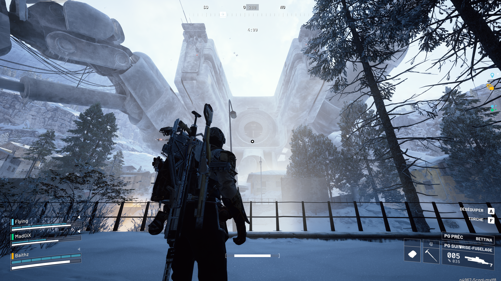

Speranza Ops / Atelier 3D / Pendola
L’Empereur échoué.
V02 · structure reprise depuis votre capture. Fidélité encore à contrôler avant intégration.


Comparaison de cadrage · l’échelle et la profondeur restent estiméesChargement de la reconstruction…
Assemblage du modèle et des textures